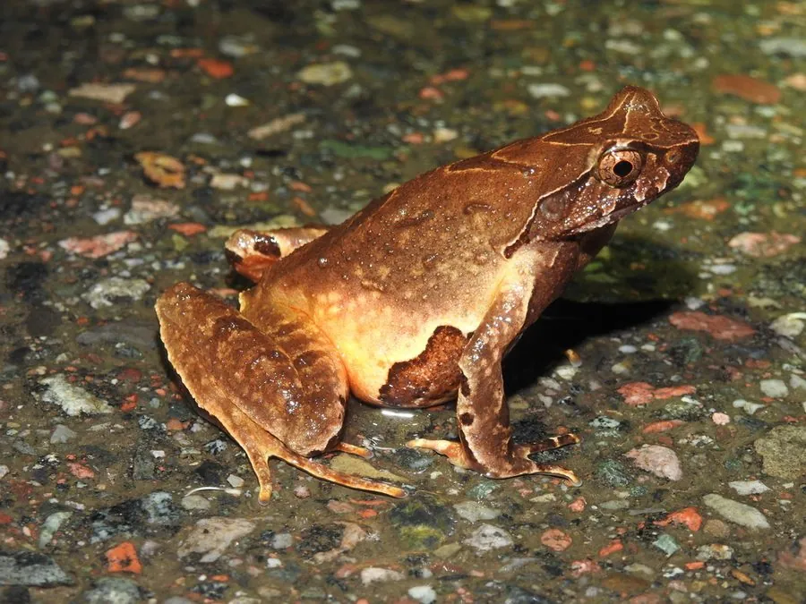

两栖动物 · 动物界
峨眉角蟾 Megophrys omeimontis

中国四川峨眉山等地的角蟾，头部有角状皮肤突起，体色像枯叶，白天藏在落叶中，夜间在溪边捕食昆虫。
- 分类
- 门脊索动物门纲两栖纲目无尾目科角蟾科属角蟾属
- 栖息环境
- 海拔 1000–2000 米的常绿阔叶林溪流与落叶层
- 地理分布
- 中国四川、重庆、贵州等地山地
- 保护级别
- IUCN 无危（LC）；中国“三有”保护动物
物种志
峨眉角蟾体长 5–7 厘米，身体矮胖，头部宽大，吻端呈三角形，眼睑上方有角状皮肤突起，因此得名；体背呈黄褐色、棕褐色或灰褐色，散布深色斑纹和疣粒，外形酷似一片枯叶，腹部颜色较浅，四肢短粗。
它分布于中国四川、重庆、贵州等地的山地，栖息于海拔 1000–2000 米的常绿阔叶林溪流附近，白天藏在落叶、石缝和土洞中，夜间在溪边捕食昆虫、蜘蛛和蠕虫。繁殖期在春夏，雄蟾在溪流石缝中鸣叫，雌蟾把卵产在石下，蝌蚪有漏斗状的口部，能浮在水面滤食。峨眉角蟾的枯叶伪装非常逼真，遇到危险时它会一动不动；它依赖森林溪流环境，中国将其列入“三有”名录。
形态与习性
- 食性昆虫、蜘蛛和蠕虫
- 体长约 5–7 cm
- 伪装体色和形态酷似枯叶
- 繁殖春夏在溪流石下产卵，蝌蚪口部呈漏斗状
- 活动节律夜行性，白天藏在落叶和石缝中
- 特征眼睑上方有角状皮肤突起
趣味知识
- 峨眉角蟾趴在地上时像一片枯叶，连叶脉般的斑纹都很逼真。
- 它的蝌蚪长着漏斗状的口部，可以浮在水面滤食浮游生物。
- 峨眉角蟾是峨眉山常见的两栖动物，但需要清洁的森林溪流。